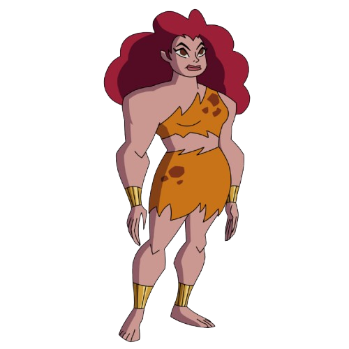
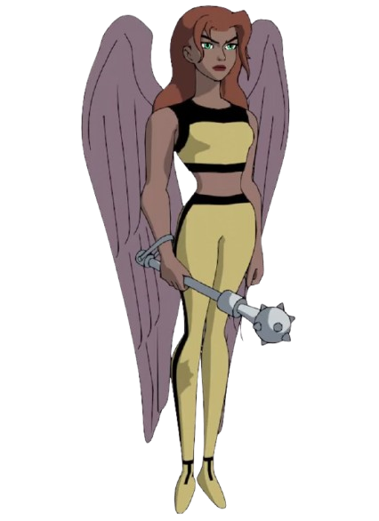
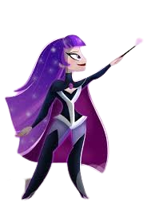

Giganta
She debuted as a brutish strongwoman in 1944's Wonder Woman, written by Wonder Woman creator William Moulton Marston and illustrated by Harry G. Peter, and went on to become one of Wonder Woman's most recognizable and persistent foes, appearing during every major era of the hero's comic book adventures, and adapted frequently for television and animation.
Power Girl

Power Girl is the cousin of the superhero Superman, but from an alternate universe in the fictional multiverse in which DC Comics stories are set. Originally hailing from the world of Earth-Two, first envisioned as the home of DC's wartime heroes as published in 1940s comic books, Power Girl becomes stranded in the main universe where DC stories are set, and becomes acquainted with that world's Superman and her own counterpart, Supergirl.
Hawkgirl
Hawkgirl is the name of several superheroines appearing in American comic books published by DC Comics. The original Hawkgirl, Shiera Sanders Hall, was created by writer Gardner Fox and artist Dennis Neville, and first appeared in Flash Comics. Shayera Hol was created by writer Gardner Fox and artist Joe Kubert, and first appeared in The Brave and the Bold.
Zatanna
The character is depicted as a renowned sorceress belonging to the fictional Homo magi race, a subset of humans endowed with innate potential to manipulate magic. She is also the daughter of Giovanni Zatara and Sindella, the former a renowned stage magician and sorcerer whom she models herself after and the latter whose lineage connects her to the royal line of Atlantis. Zatanna balances her life as a international celebrity stage magician and superhero who often fights against the forces of evil and serves as both a mystic consultant and a notable member of several teams such as the Justice League.
Wonder Woman

Wonder Woman's most enduring origin story dates from the Golden Age of Comic Books, which relays that she was sculpted from clay by her mother, Queen Hippolyta, and given a life as an Amazon along with superhuman powers as gifts from the Greek gods. Other retellings establish her as the biological daughter of Zeus and Hippolyta, making her a demigod. The character has also changed in her depiction over the decades, including briefly losing her powers entirely in the late 1960s; by the 1980s, artist George Perez gave her an athletic look and emphasized her Amazonian heritage. She possesses an arsenal of magical items, including the Lasso of Truth, a pair of indestructible bracelets, a tiara which serves as a projectile, and, in older stories, a range of devices based on Amazon technology.